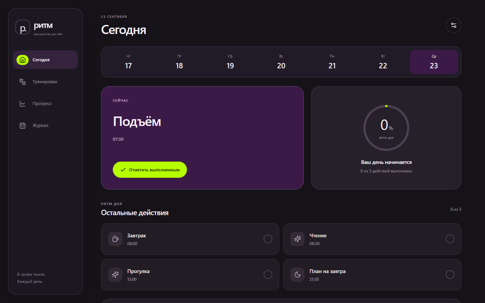
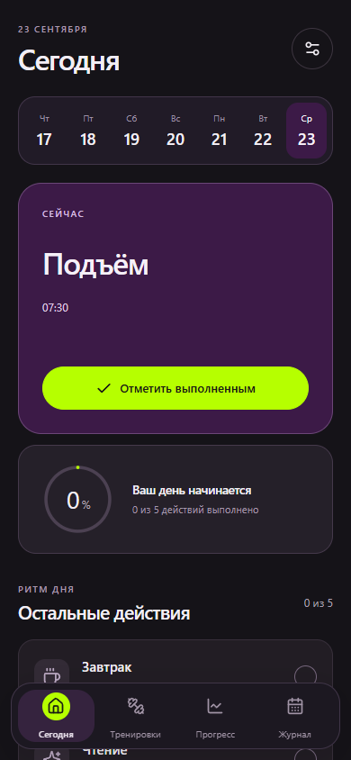
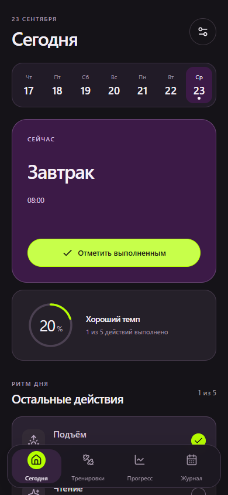
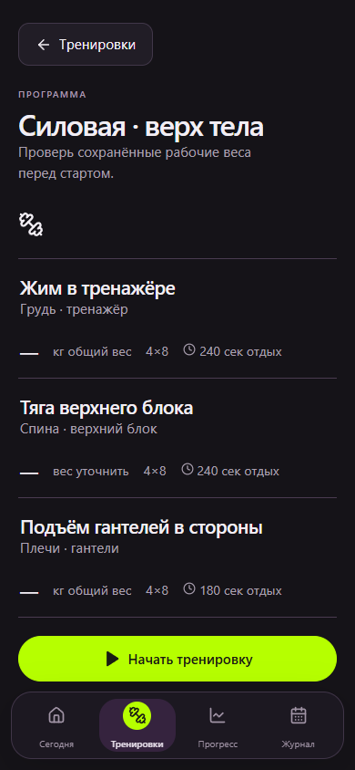
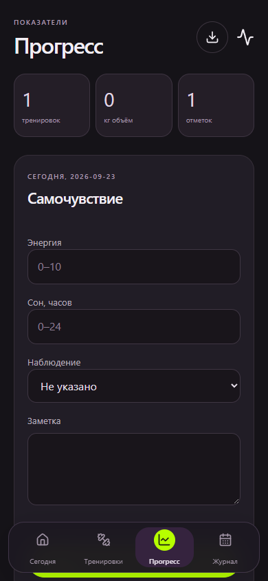
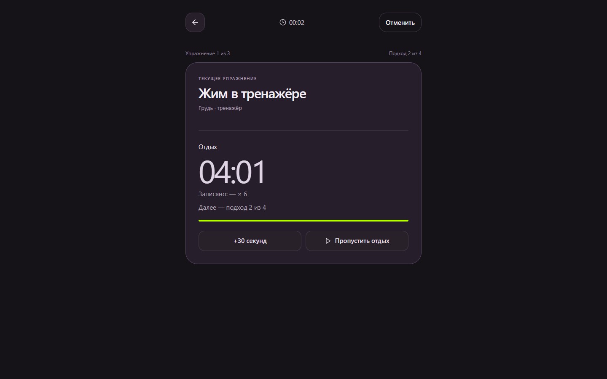
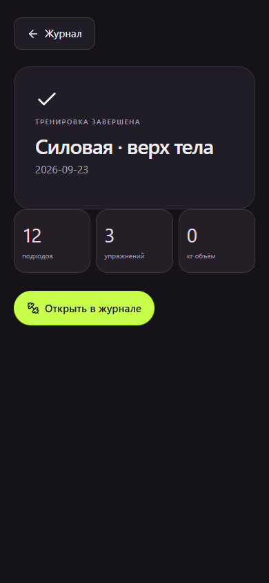
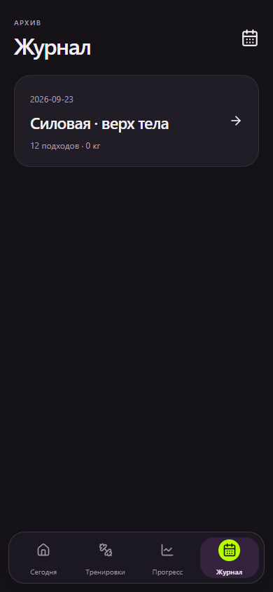
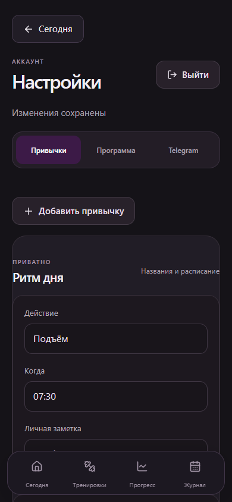
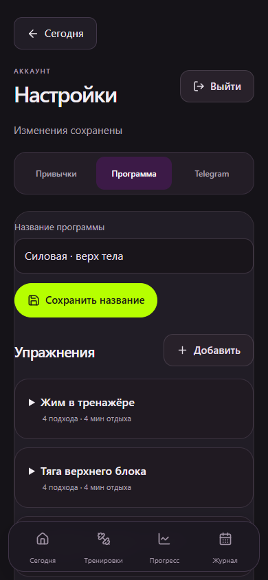

Личный трекер · PWA2026
РИТМ

PORTFOLIO DEMO · VERIFIED FLOW
День,
который
движется.
Привычки, силовые тренировки и самонаблюдение собраны в один спокойный ежедневный ритм.
Прогресс здесь — не декоративный график. Он появляется после конкретного действия: отметки, подхода, записи.
Весь продукт.
Один проход.
Сегодня → привычка → программа → 12 подходов → итог → прогресс → журнал → настройки.




SIGNATURE FLOW
Подход.
Отдых.
Дальше.


MOBILE WALKTHROUGH
Всегда
под рукой.
Состояние
становится
историей.
Журнал и настройки показаны как реальные части продукта: без вымышленных метрик, внешней синхронизации и технических бейджей в portfolio demo.


